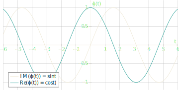

25 Funkcje charakterystyczne
25.1 Całkowanie funkcji o wartościach zespolonych
Dla liczby zespolonej \(z\in \mathbb{C}\) przez \(\Re(z)\) oraz \(\Im(z)\) będziemy oznaczać odpowiednio część rzeczywista i część urojoną \(z\). Zauważmy, że funkcje \(z \mapsto \Re(z)\) oraz \(z \mapsto \Im(z)\) są ciągłe. Rozważmy funkcję o wartościach zespolonych \(\psi \colon \mathbb{R} \to \mathbb{C}\). Wówczas dla każdego \(x \in \mathbb{R}\), \[\begin{equation*} \psi(x) = \Re(\psi(x)) +i \Im(\psi(x)). \end{equation*}\] Powiemy, że \(\psi\) jest mierzalna, gdy \(\Re(\psi)\) oraz \(\Im(\psi)\) są mierzalnymi funkcjami \(\mathbb{R} \to \mathbb{R}\). Jeżeli \(\psi\) jest mierzalna, to całki z \(\Re(\psi)\) oraz \(\Im(\psi)\) względem dowolnego rozkładu prawdopodobieństwa \(\mu\) na \(\mathbb{R}\) są dobrze określone.
Definicja 25.1 Niech \(\psi \colon \mathbb{R} \to \mathbb{C}\) będzie funkcją mierzalną i niech \(\mu\) będzie dowolnym rozkładem prawdopodobieństwa na \(\mathbb{R}\). Całkę z \(\psi\) względem \(\mu\) definiujemy przez \[\begin{align*} \int_\mathbb{R} \psi(x) \mu(\mathrm{d}x) =& \int_\mathbb{R} \Re(\psi(x) ) \mu( \mathrm{d}x)\\ & + i\int_\mathbb{R} \Im(\psi(x) ) \mu( \mathrm{d}x). \end{align*}\]
Zauważmy, że z powyższej definicji \(\int \psi(x) \mu(\mathrm{d}x)\) jest liczbą zespoloną, oraz \[\begin{equation*} \Re \left( \int_\mathbb{R} \psi(x) \mu(\mathrm{d}x)\right) = \int_\mathbb{R} \Re(\psi(x) ) \mu( \mathrm{d}x). \end{equation*}\] Analogicznie \[\begin{equation*} \Im \left( \int_\mathbb{R} \psi(x) \mu(\mathrm{d}x)\right) = \int_\mathbb{R} \Im(\psi(x) ) \mu( \mathrm{d}x). \end{equation*}\] Nasze potrzeby sprowadzą się do całkowania bardzo konkretnego rodzaju funkcji. Zanim do tego przejdziemy uzasadnimy nierówność trójkąta. Dla liczby zespolonej \(z\) przez \(|z|\) oznaczać będziemy jej moduł \[\begin{equation*} |z| = \sqrt{\Re(z)^2+\Im(z)^2}. \end{equation*}\] Utożsamiając \(\mathbb{C}\) z \(\mathbb{R}^2\) oraz korzystając z nierówności \[\begin{equation*} \left\| \mathbb{E}\left[ \vec{X} \right] \right\| \leq \mathbb{E}\left[ \left\| \vec{X} \right\| \right] \end{equation*}\] dla wektorów losowych otrzymujemy
Wniosek 25.1 Dla mierzalnej \(\psi \colon \mathbb{R} \to \mathbb{C}\) oraz dowolnego rozkładu prawdopodobieństwa na \(\mathbb{R}\), \[\begin{equation*} \left| \int_\mathbb{R} \psi(x) \mu(\mathrm{d}x) \right| \leq \int_\mathbb{R} \left| \psi(x) \right| \mu(\mathrm{d}x). \end{equation*}\]
Warto jednak w tym miejscu przytoczyć alternatywny dowód Wniosku 25.1.
Proof (Alternatywny dowód Wniosku 25.1). Jeżeli \(\int_\mathbb{R} \psi(x) \mu(\mathrm{d}x)=0\), to teza wniosku jest oczywista. Załóżmy więc, że \(\int_\mathbb{R} \psi(x) \mu(\mathrm{d}x) \neq 0\). Niech \[\begin{equation*} \lambda = \left| \int_\mathbb{R} \psi(x) \mu(\mathrm{d}x) \right| / \int_\mathbb{R} \psi(x) \mu(\mathrm{d}x). \end{equation*}\] Wówczas \(\lambda\) jest liczbą zespoloną o module jeden. Z definicji \[\begin{equation*} \left| \int_\mathbb{R} \psi(x) \mu(\mathrm{d}x) \right| = \int_\mathbb{R} \lambda \psi(x) \mu(\mathrm{d}x). \end{equation*}\] Skoro moduł liczby zespolonej jest liczbą rzeczywistą, to \[\begin{align*} \left| \int_\mathbb{R} \psi(x) \mu(\mathrm{d}x) \right| & = \Re \left( \int_\mathbb{R} \lambda \psi(x) \mu(\mathrm{d}x) \right)\\ & = \int_\mathbb{R} \Re \left(\lambda \psi(x) \right) \mu(\mathrm{d}x). \end{align*}\] Skoro \(\Re(z)\leq |z|\) dla \(z\in \mathbb{C}\), to \[\begin{align*} \int_\mathbb{R} \Re \left(\lambda \psi(x) \right) \mu(\mathrm{d}x) & = \int_\mathbb{R} \left|\lambda \psi(x) \right| \mu(\mathrm{d}x) \\ & \leq \int_\mathbb{R} \left| \psi(x) \right| \mu(\mathrm{d}x). \end{align*}\] □
25.2 Funkcje charakterystyczne: przykłady
Definicja 25.2 Funkcją charakterystyczną zmiennej losowej \(X\) nazywamy funkcję \(\varphi_X:\mathbb{R} \to \mathbb{C}\) zdefiniowaną wzorem \[ \varphi_X(t) = \mathbb{E} \left[e^{it X} \right] = \mathbb{E} \left[ \cos (tX) + i \sin (tX) \right].\]
Funkcja charakterystyczna nazywana jest też (np. w analizie) transformatą Fouriera. Można zapisać ją też w postaci \[ \phi_X(t) = \int_\mathbb{R} e^{its}\mu_X(\mathrm{d}s), \] gdzie \(\mu_X\) jest rozkładem \(X\). Powyższa formuła oznacza transformatę Fouriera miary \(\mu_X\) dlatego czasami będziemy mówić o funkcji charakterystycznej rozkładu \(\mu\) zadanej prze \[ \phi_\mu(t) = \int_\mathbb{R} e^{its}\mu(\mathrm{d}s), \]
Przykład 25.1 Jeżeli \(X = a\) z prawdopodobieństwem jeden, to \[ \varphi_X(t) = \mathbb{E}\left[ e^{it X} \right] = e^{ita}. \] Funkcję charakterystyczną \(\varphi_X\) możemy utożsamić z parą funkcji \(\Re(\varphi_X)\) oraz \(\Im(\varphi_X)\). Dla \(a=1\) ich wykresy wyglądają następująco.  O funkcji charakterystycznej możemy też myśleć jak o krzywej w \(\mathbb{R}^3\) o parametryzacji \((t, \Re(\varphi_X(t)), \Im(\varphi_X(t)))\). Wówczas dla \(a=1\) otrzymujemy
Przykład 25.2 Jeżeli \(X\sim U(0,1)\), to \[\begin{align*} \varphi_X(t) & = \int_0^1 e^{its} \mathrm{d}s \\ & = \int_0^1 \cos(ts)ds + i \int_0^1 \sin(ts) \mathrm{d}s\\ &= \left.\frac{\sin (ts)}{t}\right|_0^1 - \left.\frac{i\cos (ts)}{t}\right|_0^1 \\ & = \frac 1t\left( \sin t - i\cos t + i \right)\\ &= \frac 1{it} \left( \cos t + i\sin t -1 \right) = \frac{e^{it}-1}{it}. \end{align*}\]
Wykres mary funkcji
oraz krzywa w \(\mathbb{R}^3\)
Przykład 25.3 Jeżeli \(X\sim \mathcal{N}(0,1)\), to wówczas \[ \varphi_X(t) = e^{-\frac{t^2}{2}}. \] Istotnie, piszemy: \[\begin{align*} \varphi_X(t) & = \frac{1}{\sqrt{2\pi}} \int_\mathbb{R} e^{itx} e^{-\frac{x^2}2} \mathrm{d}x \\ & = \frac{1}{\sqrt{2\pi}} \int_\mathbb{R} \cos(tx) e^{-\frac{x^2}2} \mathrm{d}x.\\ \end{align*}\] Wówczas, różniczkując pod całką, a następnie całkując przez części, otrzymujemy \[\begin{align*} \varphi'_X(t) & = -\frac 1{\sqrt{2\pi}}\int_\mathbb{R} x\sin(tx) e^{-\frac{x^2}{2}} \mathrm{d}x \\ & = -\frac 1{\sqrt{2\pi}}\int_\mathbb{R} t \cos(tx) e^{-\frac{x^2}2}\mathrm{d}x = -t\varphi_X(t). \end{align*}\] Stąd \[ \big( \varphi_X(t) e^{\frac {t^2}2} \big)' = \varphi_X'(t) e^{\frac{t^2}{2}} + t\varphi_X(t) e^{\frac{t^2}{2}} = 0, \] a stąd wynika, że \[\varphi_X(t) e^{\frac{t^2}{2}} = C.\] Kładąc \(t=0\) wyliczamy wartość stałej: \[\varphi_X(0)=1 = C.\] Innym sposobem obliczenia \(\varphi_X(t)\) jest użycie metod z analizy zespolonej.
Jeżeli rozkład \(\mu\) ma gęstość \(f \colon \mathbb{R} \to \mathbb{R}\), to funkcja charakterystyczna \[\begin{equation*} \varphi_\mu(t) = \int_\mathbb{R} e^{itx}f(x) \mathrm{d}x \end{equation*}\] jest transformatą Fouriera funkcji \(f\). O transformacie Fouriera można posłuchać od Granta Sandersona.
25.3 Funkcje charakterystyczne: własności
Twierdzenie 25.1 Niech \(\varphi_X\) będzie funkcją charakterytyczną zmiennej losowej \(X\). Wtedy
- \(\varphi_X(0)=1\);
- \(|\varphi_X(t)|\le 1\);
- \(\varphi_X(-t) = \overline{\varphi_X(t)}\);
- \(\varphi_X(t)\) jest rzeczywista wtedy i tylko wtedy, gdy rozkład \(X\) jest symetryczny;
- funkcja \(\phi_X(t)\) jest jednostajnie ciągła;
- \(\varphi_{aX+b}(t) = e^{itb} \varphi_X(at)\).
Proof. Punkt 1 wynika z \[\varphi_X(0) = \mathbb{E} \left[ 1 \right] = 1.\] Dowód punktu 2: \[ |\varphi_X(t)| \le \mathbb{E} \left[ \left|e^{itX}\right|\right]=1. \] Dowód punktu 3: \[\begin{align*} \varphi_X(-t) & = \mathbb{E} \left[ \cos(-tX) \right] + i \mathbb{E} \left[\sin(-tX) \right] \\ & = \mathbb{E} \left[ \cos(tX) \right] - i \mathbb{E} \left[\sin(tX) \right] \\ & = \overline{ \mathbb{E}[ e^{it X}] } = \overline{\varphi_X(t)}. \end{align*}\] Punkt 4: jeżeli rozkład \(X\) jest symetryczny, to \(\varphi(X)\) jest rzeczywista w oczywisty sposób. Odwrotna implikacja zostanie udowodniona nieco później.
Punkt 5 wynika z \[\begin{align*} \left| \varphi_X(t+h) - \varphi_X(t)\right| & = \left| \mathbb{E} \left[(e^{ihX}-1)e^{itX}\right] \right| \\ & \le \mathbb{E} \left|e^{ihX}-1\right|. \end{align*}\] Z tw. Lebesgue’a powyższa wartość zbiega do 0, gdy \(h\to 0\) niezależnie od \(t\). Punkt 6: \[\begin{align*} \varphi_{aX+b}(t) & = \mathbb{E} \left[ e^{i(aX+b)t} \right] \\ & = e^{ibt}\mathbb{E} \left[ e^{iXat}\right] = e^{itb}\varphi_X(at). \end{align*}\]
□
Twierdzenie 25.2 (Bochnera) Funkcja \(\varphi \colon \mathbb{R} \to \mathbb{C}\) jest funkcją charakterystyczną pewnego rozkładu prawdopodobieństwa wtedy i tylko wtedy, gdy \(\varphi\) jest ciągła, \(\varphi(0)=1\) i \(\varphi\) jest dodatnio określona, tzn. dla każdego ciągu \(t_1,\ldots, t_n \in \mathbb{R}\) oraz \(z_1,\ldots, z_n\in \mathbb{C}\) zachodzi \[ \sum_{k,j\le n} \varphi(t_k-t_j) z_k\overline z_j \ge 0. \]
Salomon Bochner (1899-1982)
Proof. Załóżmy, że \(\varphi\) jest funkcją charakterystyczną, wtedy \[\begin{align*} \sum_{k,j} \varphi(t_k-t_j)z_k \overline z_j & = \sum_{k,j} \mathbb{E}\left[ e^{it_k X}e^{-i t_j X} z_k \overline z_j \right] \\ & =\mathbb{E}\left[\sum_{k,j} e^{it_k X } z_k \overline{e^{i t_j X}z_j}\right] \\ & = \mathbb{E}\left|\sum_k e^{-t_k X}z_k\right|^2 \ge 0 \end{align*}\] Dowód odwrotnej implikacji (trudny!) pomijamy.
□
Twierdzenie 25.3 Załóżmy, że \(X\) jest zmienną losową taką, że \(\mathbb{E}[|X|^k]<\infty\) dla pewnej liczby naturalnej \(k\). Wtedy funkcja charakterystyczna \(\varphi_X\) ma \(k\)-tą pochodną ciągłą i \[ \varphi_X^{(k)}(t) = i^k \mathbb{E}\left[ e^{i t X} X^k \right]. \] W szczególności \[ \varphi_X^{(k)}(0) = i^k \mathbb{E}\left[X^k\right]. \] Ponadto \[ \varphi_X(t) = 1 + \sum_{j=1}^k\frac{(it)^j}{j!} \cdot \mathbb{E} \left[X^j\right] + o(|t|^k), \] gdzie ostatni składnik spełnia \(\lim_{t\to 0} \frac{o(|t|^k)}{|t|^k} = 0\).
Proof. Dla \(k=1\) mamy \[\begin{align*} \frac{\varphi_X(t+h) - \varphi_X(t)}{h} & = \mathbb{E}\left[\frac{e^{i(t+h)X} - e^{itX}}{h}\right]\\ & = \mathbb{E}\left[ e^{itX}\cdot \frac{e^{ihX}-1}h \right]. \end{align*}\] Zauważmy, że \[ \lim_{h\to 0 } \frac{e^{ih X }-1}{h} = iX. \] Chcemy więc przejść z granicą pod całkę używając twierdzenia Lebesgue’a. W tym celu piszemy (przypomnijmy wzór \(\cos(2x) = 1-2\sin^2(x)\)): \[\begin{align*} \left| e^{itX}\cdot \frac{e^{ihX}-1}h \right| \le & \frac{|\cos(hX)-1|}{|h|} + \frac{|\sin(h X)|}{|h|}\\ = & |X|\cdot \left( \sin(hX/2)\cdot \frac{\sin (hX/2)}{h|X|/2}\right. \\ & + \left. \frac{|\sin h X|}{|h||X|}\right) \\ \le & 2|X|. \end{align*}\] Z założenia \(\mathbb{E}[ |X|]<\infty\) możemy odwołać się do twierdzenie Lebesgue’a i stąd \[\begin{align*} \varphi'_X(t) & = \lim_{h\to 0} \frac{\varphi_X(t+h) - \varphi_X(t)}{h} \\ & = \mathbb{E}\left[ e^{itX}\cdot \lim_{h\to 0} \frac{e^{ihX}-1}h \right] \\ & = i\mathbb{E}\left[ e^{itX} X \right]. \end{align*}\] Ciągłość \(\phi'_X\) (a nawet jednostajna ciągłość) wynika bezpośrednio w powyższej formułki.
Dla \(k> 1\) rozumujemy przez indukcję.
Ostatnie równanie, przypomina twierdzenia Taylora, ale z uwagi na pojawienie się liczb zespolonych dochodzą pewne drobne problemy techniczne. Szczegóły można znaleźć w ksiażce Durretta, tw. 3.3.20).
□
Twierdzenie 25.4 Jeżeli \(X\) i \(Y\) są niezależnymi zmiennymi losowymi, to \[ \varphi_{X+Y}(t) = \varphi_X(t) \varphi_Y(t). \]
Proof. Piszemy \[\begin{align*} \varphi_{X+Y}(t) & = \mathbb{E} \left[ e^{it (X+Y)}\right] \\ & = \mathbb{E} \left[ e^{itX} \right] \mathbb{E}\left[ e^{itY}\right]\\ & = \varphi_X(t) \varphi_Y(t). \end{align*}\]
□
Warto wyjaśnić dlaczego funkcje charakterystyczne będą dla nas przydatne. Wynika to m.in. z powyższego twierdzenia. Chcemy badać sumy niezależnych zmiennych losowych. Ich rozkłady są trudne do obliczenia (wyraziliśmy je wcześniej w terminach splotów). Zauważmy jednak, że na poziomie funkcji charakterystycznych jest to po prostu iloczyn funkcji. Okazuje się, że wiele problemów dla sum zmiennych losowych po wyrażeniu ich w terminach funkcji charakterystycznych staje się znacznie łatwiejszych do przeanalizowania. To jest zjawisko, które pojawia się w wielu innych miejscach (w równaniach różniczkowych transformata Fouriera zamienia różniczkowanie na mnożenie przez wielomian, a splot funkcji na iloczyn ich transformat; w kombinatoryce sploty dwóch ciągów wygodniej analizuje się używając funkcji generujących momenty lub dyskretnej transformaty Fouriera). Musimy więc lepiej zrozumieć związki pomiędzy zmiennymi losowymi, a ich funkcjami charakterystycznymi. W szczególności powinniśmy wiedzieć, że funkcja charakterystyczna jednoznacznie wyznacza rozkład zmiennej losowej (a nawet można ją stosunkowo łatwo odwrócić). Potrzebujemy więc dalszych własności funkcji charakterystycznych. Powyższe uwagi nie ograniczają się jedynie do sum niezależnych zmiennych losowych. Jak zobaczymy funkcje charakterystyczne mają znacznie szersze zastosowania.
25.4 Funkcje charakterystyczne a słaba zbieżność
Twierdzenie 25.5 (o jednoznaczności) Jeżeli rozkłady prawdopodobieństw \(\mu\) i \(\nu\) na \(\mathbb{R}\) mają równe funkcje charakterystyczne \[ \varphi_\mu(t) = \varphi_\nu(t) \] dla każdego \(t \in \mathbb{R}\), to \(\mu =\nu\).
Proof. W dowodzie skorzystamy z twierdzenia Weierstrassa mówiącego, że każdą funkcję ciągłą okresową \(f\) o okresie \(T\) na \(\mathbb{R}\) możemy przybliżyć jednostajnie ciągiem wielomianów trygonometrycznych \[ f_n(x) = \sum_{k=0}^n \left( a_k \sin (2\pi kx/T) + b_k \cos (2\pi k x/T) \right). \] Wystarczy pokazać, że dla dowolnej funkcji \(f\in C(\mathbb{R})\) mamy \[\begin{equation} \int_\mathbb{R} f(x) \mu(\mathrm{d}x) = \int_\mathbb{R} f(x)\nu(\mathrm{d}x). \tag{25.1} \end{equation}\] Z równości funkcji charakterystycznych wiemy, że powyższa równość zachodzi dla każdej funkcji postaci \(x\mapsto e^{itx}\) (przy ustalonym \(t\)). Formuła (25.1) zachodzi również dla dowolnego wielomianu trygonometrycznego, ponieważ \[ \sin(tx) = \frac{e^{itx} - e^{-itx}}{2i} \] oraz \[ \cos(tx) = \frac{e^{itx} + e^{-itx}}{2}. \] Zatem z twierdzenia Weierstrassa równość (25.1) jest prawdziwa dla dowolnej funkcji, która jest ciągła i okresowa.
Niech \(f\) będzie dowolną funkcją ciągłą i ograniczoną. Istnieje ciąg funkcji \(f_n\) ciągłych oraz okresowych o okresie \(2n+2\) takich, że \[ f(x) = f_n(x) \quad \mbox{dla } x\in [-n,n] \] oraz \[ \sup_{x\in \mathbb{R}} |f_n(x)| \le \sup_{x\in \mathbb{R}} |f(x)| \] Wówczas mamy \[\begin{align*} & \left| \int_\mathbb{R} f(x)\mu(\mathrm{d}x) - \int_\mathbb{R} f(x)\nu(\mathrm{d}x)\right| \\ & \le \int_\mathbb{R} |f(x) - f_n(x)|\mu(\mathrm{d}x)\\ & + \left| \int_\mathbb{R} f_n(x)\mu(\mathrm{d}x) - \int_\mathbb{R} f_n(x)\nu(\mathrm{d}x) \right|\\ & + \int_\mathbb{R}|f(x)- f_n(x)|\nu(\mathrm{d}x)\\ & \le 2\sup_{x\in\mathbb{R}} |f(x)| \Big( \mu\big((-n,n)^c\big) + \nu\big((-n,n)^c\big) \Big) \\ & \to 0, \end{align*}\] co dowodzi, że \(f\) spełnia (25.1).
□
Wniosek 25.2 Niech \(X\) będzie zmienną losową. Wówczas \(\varphi_X(t)\) jest rzeczywista wtedy i tylko wtedy, gdy rozkład \(X\) jest symetryczny.
Proof. Jeżeli funkcja charakterystyczna \(\phi_X(t)\) jest rzeczywista, to \[ \varphi_X(t) = \overline{\varphi_X(-t)} = \varphi_X(-t) = \varphi_{-X}(t) \] dla każdego \(t \in \mathbb{R}\). Zatem w twierdzenia o jednoznaczności rozkładu \(X\) oraz \(-X\) muszą mieć ten sam rozkład, a więc \(X\) jest symetryczna.
Przykład 25.4 Jeżeli \(X_1\) i \(X_2\) są niezależne i mają rozkłady odpowiednio
\(\mathcal{N}(m_1,\sigma_1^2)\) i \(\mathcal{N}(m_2,\sigma_2^2)\),
to \(X_1+X_2\) ma
rozkład \(\mathcal{N}(m_1+m_2,\sigma_1^2+\sigma_2^2)\).
Istotnie, zapiszmy \(X_j = m_j + \sigma_j Y_j\),
wówczas \(Y_j\) ma rozkład \(\mathcal{N}(0,1)\).
Możemy więc obliczyć funkcję charakterystyczną \(\varphi_{X_j}\):
\[\begin{align*}
\varphi_{X_j}(t) & = \varphi_{m_j + \sigma_j Y_j}(t) \\
& = e^{im_j}\varphi_{Y_j}(\sigma_j t) \\
& = e^{im_jt } e^{-\frac{\sigma_j^2t^2}{2}},
\end{align*}\]
zatem
\[\begin{align*}
\varphi_{X_1+X_2}(t) & = \varphi_{X_1}(t) \varphi_{X_2}(t) \\
& = e^{im_1 t} e^{-\frac{\sigma_1^2t^2}{2}}e^{im_2t} e^{-\frac{\sigma_2^2t^2}{2}}\\
& = e^{i(m_1+m_2)t} e^{-\frac{(\sigma_1^2 + \sigma_2^2)t^2}{2}}.
\end{align*}\]
Powyższa funkcja jest funkcją charakterystyczną rozkładu
\(\mathcal{N}(m_1+m_2,\sigma_1^2+\sigma_2^2)\).
Z powyższego twierdzenia o jednoznaczności wynika więc, że \(X_1+X_2\) ma właśnie taki rozkład.
Twierdzenie 25.6 (Lévy'ego-Craméra) Niech \(\{\mu_n\}_{n \in \mathbb{N}}\) będą rozkładami prawdopodobieństwa na \(\mathbb{R}\). Wówczas
- jeżeli \(\mu_n \Rightarrow \mu\), to dla każdego \(t\), \(\varphi_{\mu_n}(t) \to \varphi_{\mu}(t)\);
- jeżeli \(\varphi_{\mu_n}(t)\to\varphi(t)\) dla pewnej funkcji \(\varphi\) ciągłej w punkcie 0, to \(\varphi\) jest funkcją charakterystyczną pewnego rozkładu \(\mu\) oraz \(\mu_n\Rightarrow \mu\).
Harald Cramer (1893-1985)
Paul Lévy (1886-1971)
W dowodzie powyższego twierdzenia posłużymy się warunkiem równoważnym zbieżności. Aby go umotywować przypomnijmy uwagę z podstawowego kursu analizy.
Remark. Ciąg liczb rzeczywistych \(\{a_n\}_{n \in \mathbb{N}}\) jest zbieżny do liczby rzeczywistej \(a\) wtedy i tylko wtedy, gdy z każdego podciągu \(\{a_{n_k}\}_{k \in \mathbb{N}}\) można wybrać podciąg \(\{a_{n_{k_j}}\}_{j \in \mathbb{N}}\) zbieżny do \(a\).
Lemma 25.1 Niech \(\{\mu_n\}_{n \in \mathbb{N}}\), \(\mu\) będą miarami probabilistycznymi na \(\mathbb{R}\). Wówczas \(\mu_n \Rightarrow \mu\) przy \(n \to \infty\) wtedy i tylko wtedy, gdy z każdego ciągu \(\{\mu_{n_k}\}_{k \in \mathbb{N}}\) można wybrać podciąg \(\{\mu_{n_{k_j}}\}_{j \in \mathbb{N}}\) taki, że \(\mu_{n_{k_j}} \Rightarrow \mu\) przy \(j \to \infty\).
Proof (Dowód Lematu). Jeżeli \(\mu_n \Rightarrow \mu\), to warunek obecny w lemacie jest oczywisty. Załóżmy teraz, że \(\mu_n\) nie zbiegają słabo do \(\mu\). Istnieje wówczas funkcja \(f_0 \in C_b(\mathbb{R})\) taka, że ciąg \[\begin{equation*} \left\{ \int_{\mathbb{R}} f_0(x) \: \mu_n(\mathrm{d}x) \right\}_{n \in \mathbb{N}} \end{equation*}\] nie zbiega do \(\int_\mathbb{R} f_0(x) \mu(\mathrm{d}x)\). Oznacza to, że istnieje \(\epsilon>0\) oraz podciąg \(\{n_k\}_{k \in \mathbb{N}}\) taki, że \[\begin{equation*} \left| \int_{\mathbb{R}} f_0(x) \: \mu_n(\mathrm{d}x) - \int_{\mathbb{R}} f_0(x) \mu(\mathrm{d})x \right|>\epsilon \end{equation*}\] dla każdego \(k \in \mathbb{N}\). Z ciągu \(\{\mu_{n_k}\}_{k \in \mathbb{N}}\) nie można wybrać podciągu zbieżnego do \(\mu\). Zatem warunek obecny w lemacie nie jest spełniony.
Proof. Dowód pkt 1: wystarczy napisać \[\begin{align*} \varphi_{\mu_n}(t) = & \int_{\mathbb{R}} \cos(tx) \mu_n(\mathrm{d}x) \\ + & i \int_{\mathbb{R}} \sin(tx) \mu_n(\mathrm{d}x) \\ & \to \int_{\mathbb{R}} \cos(tx) \mu(\mathrm{d}x) \\ + & i \int_\mathbb{R} \sin(tx) \mu(\mathrm{d}x) \\ =& \varphi_{\mu}(t). \end{align*}\] Dowód pkt 2. Krok 1 Pokażemy, że jeżeli \(\varphi_{\mu_n}(t)\to\varphi(t)\) i \(\phi\) jest ciągła w zerze, to rodzina \(\{\mu_n\}\) jest ciasna. Zanim przejdziemy do dowodu, zauważmy, że zachodzi tu pewnego rodzaju dualność i poniższe rachunki pokazują, że ogony miar probabilistycznych (ich malenie w nieskończoności) jest kontrolowane przez zachowanie ich funkcji charakterystycznych przy zerze (tu z kolei warunek jest jakościowy i wykorzystamy ciągłość).
Ustalmy parametry \(x\in\mathbb{R}\),\(u>0\) i zauważmy \[\begin{align*} \int_{-u}^u (1-e^{itx})\mathrm{d}t & = 2u - \int_{-u}^u \cos(tx) \mathrm{d}t \\ & = 2u - \frac{2\sin (ux)}{x}. \end{align*}\] Podzielmy obie strony przez \(u\) i scałkujmy po \(x\) względem miary \(\mu_n\). Wówczas \[\begin{align*} & \frac 1u \int_{-u}^u (1-\varphi_{\mu_n}(t)) \mathrm{d}t\\ & = 2 \int_\mathbb{R} \left( 1-\frac{\sin ux}{ux} \right) \mu_n(\mathrm{d}x)\\ & \ge 2\int_{\{|x|\ge 2/u\}} \left( 1 - \frac 1{u|x|}\right)\mu_n(\mathrm{d}x) \\ & \ge \mu_n\left(\left\{x:\; |x|>2/u\right\}\right). \end{align*}\] Ustalmy \(\varepsilon>0\). Z ciągłości \(\phi(t)\) w 0 istnieje małe \(u\) takie, że \[ \frac 1u \int_{-u}^u (1-\varphi(t)) \mathrm{d}t < 2 \varepsilon. \] Ze zbieżności \(\varphi_{\mu_n}(t)\to \varphi(t)\) wynika, że dla dużych \(n\) \[ \frac 1u \int_{-u}^u (1-\varphi_{\mu_n}(t)) \mathrm{d}t <\varepsilon. \] Zatem \[ \mu_n\left(\left\{x:\; |x|>2/u\right\}\right) <2\varepsilon, \] a to implikuje, że ciąg miar \(\{\mu_n\}_{n \in \mathbb{N}}\) jest ciasny.
Krok 2. Najpierw pokażemy, że \(\varphi\) jest funkcją charakterystyczną pewnego rozkładu prawdopodobieństwa. Rodzina miar \(\{\mu_n\}_{n \in \mathbb{N}}\) ciasna, a więc z twierdzenia Prochorowa zawiera podciąg \(\{\mu_{n_k}\}_{k\in \mathbb{N}}\) słabo zbieżny do pewnej miary probabilistycznej \(\mu\). Z punktu 1. wynika, że \(\varphi_{\mu_{n_k}}(t)\to \varphi_{\mu}(t)\) dla każdego \(t\), a zatem \(\varphi=\varphi_{\mu}\).
Pozostaje do wykazania, że \(\mu_n\Rightarrow \mu\). Skorzystamy z Lematu 25.1. Rozważmy dowolny podciąg \(\{\mu_{n_k}\}_{k \in \mathbb{N}}\). Wówczas ponownie odwołując się do twierdzenia Prochorowa istnieje podciąg \(\mu_{n_{k_j}} \Rightarrow \tilde{\mu}\). Z punktu 1, \(\varphi_{\mu_{n_{k_j}}}(t) \to \varphi_{\tilde{\mu}}(t)\) przy \(j \to \infty\) dla pewnej miary \(\tilde{\mu}\). A zatem \[ \varphi_{\tilde{\mu}}(t) = \varphi_{\mu}(t) = \varphi(t), \] a to implikuje \(\tilde{\mu} = \mu\). Oznacza to, że \(\mu_{n_{k_j}} \Rightarrow \tilde{\mu} =\mu\). Z Lematu 25.1 \(\mu_n \Rightarrow \mu\).
□
Twierdzenie 25.7 (odwrotnym przekształceniu Fouriera) Rozkład prawdopodobieństwa \(\mu\) taki, że funkcja charakterystyczna \(\varphi_{\mu}\) jest całkowalna, ma ograniczoną i ciągłą gęstość zadaną wzorem \[ f(x) = \frac 1{2\pi} \int_{-\infty}^{\infty} e^{-isx} \varphi_{\mu}(s)\mathrm{d}s. \]